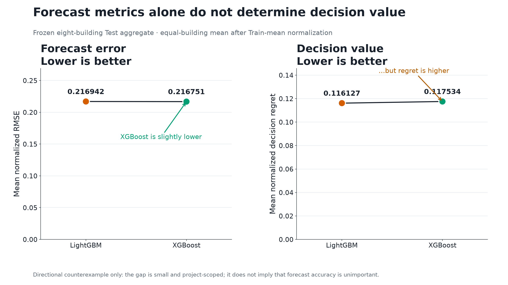

SCI-01-forecast-decision-mismatch
Forecast metrics alone do not determine decision value
SCIENTIFIC
XGBoost has slightly lower normalized RMSE than LightGBM but higher normalized decision regret on the frozen eight-building Test aggregate.